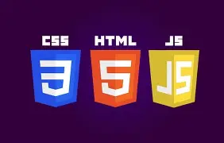

Developer Frontend Junior
Sobre mí
Soy una persona apasionada por la programación y el desarrollo web,
enfocada en crear interfaces modernas, funcionales y fáciles de usar.
Trabajo con HTML, CSS y JavaScript, desarrollando sitios web
responsivos y dinámicos, cuidando tanto el diseño como la estructura
del código.
Tengo experiencia implementando navegación interactiva, cambios de
contenido sin recargar la página, manejo de imágenes como fondos
dinámicos y diseños tipo landing o aplicaciones web.
Me gusta trabajar con código limpio, bien organizado y orientado a una
buena experiencia de usuario. Soy autodidacto, constante y siempre
dispuesto a aprender, con un enfoque práctico en resolver problemas y
construir soluciones reales que aporten valor a cada proyecto.
Contáctame

html , css y javascript
Cuento con conocimientos en HTML5, CSS3 y JavaScript, desarrollando interfaces web estructuradas, responsivas e interactivas. Me enfoco en crear diseños limpios, funcionales y una buena experiencia de usuario.
Diseño responsivo
Creo interfaces web que se adaptan a cualquier dispositivo, garantizando una experiencia de usuario óptima tanto en móviles como en escritorio. Utilizo técnicas de diseño flexible y media queries para lograr una visualización perfecta en todos los tamaños de pantalla.
web developer
Soy desarrollador web junior con conocimientos en HTML, CSS y JavaScript. Creo sitios web básicos, responsivos y funcionales, enfocados en un diseño limpio y una buena experiencia de usuario. Me encuentro en constante aprendizaje y motivado por seguir mejorando mis habilidades a través de proyectos prácticos.